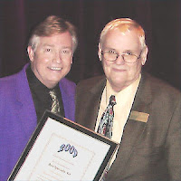
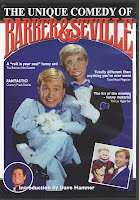

Congratulations, Jim!
5/17/2010
{kind=link}

BransonShowAwards.com honored Jim Barber as the 2009 “Best Specialty Act” in Branson. This is the second consecutive year that Jim has received the honor from Gary Wackerly, a Theater Critic who conceived and manages the Branson show awards and Branson show review as the Award Committee Chair.
(Photo L-R: Barber and Wackerly)
On April 24, 2010 Mr. Wackerly presented the award to Jim Barber onstage during the evening performance of the Hamner Barber Variety Show.
Wackerly is an independent reviewer who relies on his background in education and his personal experiences of viewing every possible show in Branson, Missouri multiple times to determine his selections each year.
{kind=link}

“No matter how many times you see this show something always strikes you as amazing or funny", says Wackerly. "Jim has the knack of bringing his constant smile to every audience. His enormous talent as a ventriloquist is remarkable. That is why he won the Best Specialty Act of 2009.”
For those who want to enjoy the hilarious Barber act now, without making the trip to Branson, a Barber & Seville DVD is available here . Even better, we're giving away today, right here, a free Barber & Seville DVD! And the winner is Thomas Ayers! Congratulations! Contact Mr. D to claim your DVD.